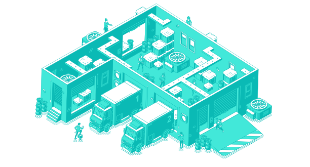

<main>
    <div class="row d-flex flex-row-reverse justify-content-center align-items-center w-100">


        <div class="img-container col-10 d-flex justify-content-end align-items-end">
            
        </div>

        <h1 class="about-head-text text-center mt-5">ABOUT</h1>
        <hr />
        <div class="container-text  col-10 d-flex justify-content-center align-items-center">

            <p class="about-head-description">IMS or Inventory Management System was build to ensure quality control in
                firms that handle transactions involving consumer products. Afterall, a major retail business may run out of supply on an important item if
                inventory is not properly managed. As such, this inventory management system has a particular component for storing
                supplies in the inventory, which will subsequently be tracked and reported. The system will then be able to identify
                whether or not a stock is available in the systems inventory. Moreover, it also has other components that can
                engage with the users to fully explore the overall experience of using IMS.

            </p>
        </div>

    </div>


</main>